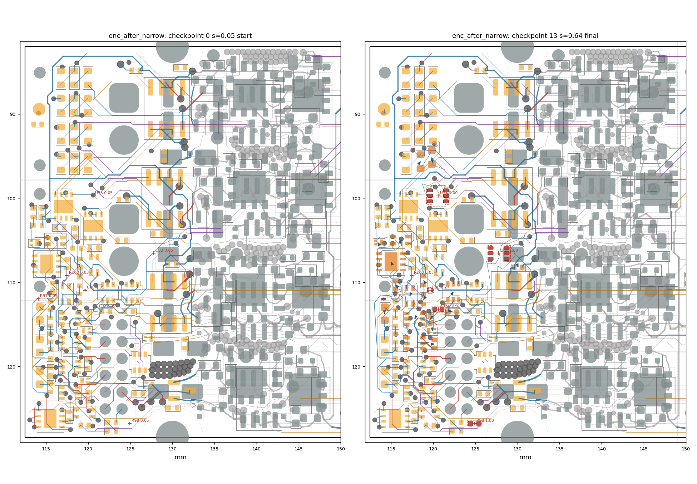
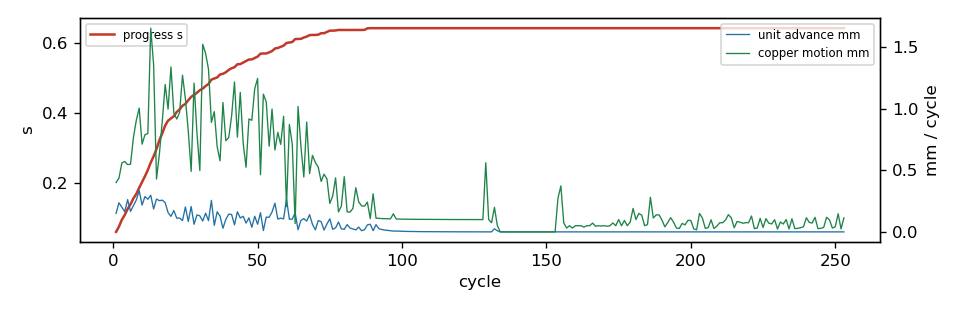

settle run: enc_after_narrow
253 cycles in 290.4 s, progress s = 0.6426; 3/7 ghosts born; 18 parts moved; 14/157 reroutes verified in 5 rounds. Gate: 14/14 checkpoints pass (baseline 3 violations); length caps hit: 0; check_sync: True.
Region [112.4, 81.9, 149.5, 128.5]; rules clearance 0.1 mm, hole 0.254, edge 0.3, guard 0.015.
79 movable parts, 1232 dynamic segments, 1408 nodes, 7 ghosts.
Orange pads = movable parts (dark orange = moved); grey = fixed; red = ghosts at their current scale; blue arrows = part displacement.
Copper by layer: F red, B blue, In1 green, In2 purple, In3 brown, In4 teal; static copper grey.


Gate per checkpoint
| step | s | tag | unconnected | new_violations | static_missing | fixed_moved | ok | new_desc |
|---|
| 0 | 0.05 | start | 103 | 0 | 0 | [] | True | [] |
| 1 | 0.11 | | 103 | 0 | 0 | [] | True | [] |
| 2 | 0.204 | | 103 | 0 | 0 | [] | True | [] |
| 3 | 0.323 | | 103 | 0 | 0 | [] | True | [] |
| 4 | 0.404 | | 103 | 0 | 0 | [] | True | [] |
| 5 | 0.502 | | 103 | 0 | 0 | [] | True | [] |
| 6 | 0.6 | | 103 | 0 | 0 | [] | True | [] |
| 7 | 0.637 | reroute | 103 | 0 | 0 | [] | True | [] |
| 8 | 0.643 | reroute | 103 | 0 | 0 | [] | True | [] |
| 9 | 0.643 | reroute | 103 | 0 | 0 | [] | True | [] |
| 10 | 0.643 | reroute | 103 | 0 | 0 | [] | True | [] |
| 11 | 0.643 | reroute | 103 | 0 | 0 | [] | True | [] |
| 12 | 0.643 | reroute | 103 | 0 | 0 | [] | True | [] |
| 13 | 0.643 | final | 103 | 0 | 0 | [] | True | [] |
Ghosts
| ref | site | scale | drift_x | drift_y | born |
|---|
| U30 | (119.62, 110.94) | 0.2661 | 0.0 | 0.0 | no |
| U32 | (127.76, 106.55) | 1.0 | 0.0 | 0.0 | yes |
| U33 | (120.57, 99.73) | 1.0 | 0.0 | 0.0 | yes |
| R97 | (114.06, 111.96) | 0.2749 | 0.01 | 0.026 | no |
| R98 | (124.92, 126.77) | 1.0 | 0.0 | 0.0 | yes |
| R100 | (117.47, 109.19) | 0.05 | 0.0 | 0.0 | no |
| C110 | (120.62, 113.19) | 0.9068 | 0.0 | 0.0 | no |
Parts moved
| ref | dx | dy | mm | group |
|---|
| R59 | -0.15 | -0.653 | 0.67 | |
| C64 | -0.351 | 0.389 | 0.524 | |
| C16 | 0.133 | 0.379 | 0.402 | |
| C60 | -0.283 | -0.241 | 0.372 | |
| FL2 | -0.111 | 0.261 | 0.284 | |
| U18 | -0.096 | -0.23 | 0.249 | |
| R60 | 0.139 | -0.164 | 0.215 | |
| C71 | 0.195 | 0.066 | 0.206 | |
| R88 | -0.11 | 0.161 | 0.195 | |
| R89 | -0.082 | -0.126 | 0.15 | |
| U25 | 0.062 | -0.095 | 0.113 | |
| D26 | -0.047 | -0.08 | 0.093 | |
| C72 | 0.084 | -0.009 | 0.084 | |
| FL4 | 0.013 | -0.077 | 0.078 | |
| U22 | -0.022 | 0.052 | 0.056 | |
| D23 | 0.007 | 0.056 | 0.056 | |
| C69 | 0.007 | 0.05 | 0.05 | |
| U26 | -0.01 | 0.044 | 0.045 | |
Net length growth (copper inside the region)
| net | region_mm | grown_mm | growth_pct | allow_mm | cap_mm | at_cap |
|---|
| /ENC_A_TRX_B | 3.44 | 0.394 | 11.4 | 0.5 | 2.0 | |
| /ENC_A_TRX_A | 2.64 | 0.27 | 10.2 | 0.5 | 2.0 | |
| Net-(R59-Pad2) | 2.32 | 0.205 | 8.8 | 0.2 | 0.8 | |
| /ENC_A_N_SW | 8.72 | 0.67 | 7.7 | 0.872 | 2.0 | |
| /ENC_D_DATA | 42.62 | 2.205 | 5.2 | 8.525 | 21.312 | |
| /ENC_D_N | 36.05 | 1.665 | 4.6 | 3.605 | 5.407 | |
| /ENC_D_SW | 43.15 | 1.476 | 3.4 | 8.631 | 21.577 | |
| /EXT_ANALOG_SW | 42.08 | 1.336 | 3.2 | 8.415 | 21.038 | |
| Vdrive | 189.5 | 5.391 | 2.8 | 56.851 | 189.502 | |
| A_SENSE | 38.88 | 1.061 | 2.7 | 3.888 | 7.777 | |
| /ENC_D_P | 31.86 | 0.751 | 2.4 | 3.186 | 4.779 | |
| /A_P | 47.26 | 0.892 | 1.9 | 9.451 | 23.628 | |
| +3V3 | 192.33 | 3.547 | 1.8 | 57.699 | 192.332 | |
| /ENC_C_N_SW | 7.89 | 0.079 | 1.0 | 0.789 | 2.0 | |
| VMOT | 28.91 | 0.279 | 1.0 | 8.672 | 28.906 | |
| /ENC_A_P | 6.02 | 0.043 | 0.7 | 0.602 | 2.0 | |
| /ENC_A_SW | 45.56 | 0.324 | 0.7 | 9.113 | 22.782 | |
| VMOT_SENSE | 44.48 | 0.114 | 0.3 | 4.448 | 8.895 | |
| /ENC_A_DATA | 51.62 | 0.129 | 0.2 | 10.324 | 25.81 | |
| /ENC_C_N | 18.39 | 0.031 | 0.2 | 1.839 | 2.758 | |
| /HALL2 | 49.14 | 0.054 | 0.1 | 9.828 | 24.57 | |
| /EXT_ANALOG2 | 70.1 | 0.02 | 0.0 | 14.021 | 35.051 | |
| /H2_SW | 44.53 | 0.015 | 0.0 | 8.905 | 22.263 | |
| GND | 140.78 | -0.088 | -0.1 | None | None | |
| /H1_SW | 37.43 | -0.03 | -0.1 | 7.485 | 18.713 | |
| /HALL1 | 50.86 | -0.064 | -0.1 | 10.173 | 25.432 | |
| /ENC_C_P_SW | 8.38 | -0.06 | -0.7 | 0.838 | 2.0 | |
| /ENC_A_N | 7.39 | -0.076 | -1.0 | 0.739 | 2.0 | |
| /ENC_D_TRX_B | 2.91 | -0.076 | -2.6 | 0.5 | 2.0 | |
| /ENC_D_TRX_A | 1.79 | -0.062 | -3.5 | 0.5 | 2.0 | |
| /ENC_A_P_SW | 1.77 | -0.191 | -10.8 | 0.5 | 2.0 | |
Stalled units and their blockers
| unit | hard_walled | blocker | net | ref | margin | floor | pos |
|---|
| GHOST:R100 | | dyn_seg | /ENC_A_TRX_B | | -0.0165 | 0.015 | [117.14, 109.977] |
| GHOST:R100 | | dyn_seg | /ENC_A_TRX_B | | -0.0218 | 0.015 | [117.14, 109.977] |
| GHOST:R100 | | dyn_seg | /ENC_A_TRX_B | | -0.0263 | 0.015 | [117.14, 109.977] |
| GHOST:R100 | | dyn_seg | /ENC_A_TRX_B | | -0.0291 | 0.015 | [117.14, 109.977] |
| GHOST:U30 | | courtyard | | R88 | -0.05 | 0.003 | |
| R88 | | dyn_via | /ENC_A_SW | | 0.0055 | 0.015 | [118.291, 113.165] |
| R88 | | dyn_via | /ENC_A_SW | | -0.0272 | 0.015 | [118.291, 113.165] |
| R88 | | dyn_via | /ENC_A_SW | | -0.0346 | 0.015 | [118.291, 113.165] |
| R88 | | dyn_via | /ENC_A_SW | | -0.0346 | 0.015 | [118.291, 113.165] |
| C60 | | dyn_via | +3V3 | | -0.0117 | 0.0 | [116.058, 109.869] |
| FL2 | | dyn_seg | /ENC_A_N_SW | | -0.0239 | 0.015 | [116.776, 111.391] |
| FL2 | | dyn_seg | /ENC_A_N_SW | | -0.0334 | 0.015 | [116.776, 111.391] |
| FL2 | | dyn_seg | /ENC_A_N_SW | | -0.0327 | 0.015 | [116.776, 111.391] |
| FL2 | | dyn_seg | /ENC_A_N_SW | | -0.033 | 0.015 | [117.279, 111.392] |
| U22 | | dyn_via | GND | | 0.0115 | 0.015 | [117.271, 114.262] |
| U22 | | dyn_via | GND | | 0.0115 | 0.015 | [117.271, 114.262] |
| U22 | | dyn_via | GND | | -0.0175 | 0.015 | [117.271, 114.262] |
| GHOST:R97 | | dyn_seg | +3V3 | | -0.0238 | 0.015 | [113.349, 112.013] |
| GHOST:R97 | | dyn_seg | +3V3 | | -0.0249 | 0.015 | [113.349, 112.013] |
| GHOST:R97 | | dyn_seg | +3V3 | | -0.0249 | 0.015 | [113.349, 112.013] |
| GHOST:R97 | | dyn_seg | +3V3 | | -0.0192 | 0.015 | [113.349, 112.013] |
| GHOST:C110 | | dyn_seg | Vdrive | | 0.0023 | 0.015 | [121.247, 112.54] |
| GHOST:C110 | | dyn_seg | Vdrive | | -0.0165 | 0.015 | [121.247, 112.54] |
| GHOST:C110 | | dyn_seg | Vdrive | | -0.0165 | 0.015 | [121.247, 112.54] |
| GHOST:C110 | | dyn_seg | Vdrive | | -0.0048 | 0.015 | [121.247, 112.54] |
| U25 | | dyn_seg | /EXT_ANALOG_SW | | -0.0269 | 0.015 | [123.035, 111.531] |
| U25 | | dyn_seg | /EXT_ANALOG_SW | | -0.0175 | 0.015 | [123.035, 111.531] |
| U25 | | dyn_seg | /EXT_ANALOG_SW | | 0.0065 | 0.015 | [123.035, 111.531] |
| U25 | | dyn_seg | /EXT_ANALOG_SW | | -0.0064 | 0.015 | [123.035, 111.531] |
| D23 | | courtyard | | U26 | -0.05 | 0.003 | |
| U26 | | dyn_via | /HALL2 | | -0.0436 | -0.0123 | [117.441, 118.079] |
| U26 | | dyn_via | GND | | 0.0064 | 0.015 | [116.32, 117.121] |
| U26 | | dyn_seg | Vdrive | | -0.0148 | 0.015 | [118.135, 116.868] |
| U26 | | dyn_seg | Vdrive | | 0.0046 | 0.015 | [118.135, 116.868] |
| grp:C64 | | dyn_via | GND | | -0.0005 | 0.0 | [119.48, 113.43] |
| grp:C64 | | dyn_via | GND | | 0.0028 | 0.015 | [117.271, 114.262] |
| grp:C64 | | dyn_via | GND | | -0.0054 | -0.001 | [116.32, 117.121] |
| U18 | | dyn_seg | /ENC_A_DATA | | -0.0099 | 0.015 | [114.355, 106.214] |
| U18 | | dyn_seg | /ENC_A_DATA | | -0.0099 | 0.015 | [114.355, 106.214] |
| U18 | | dyn_seg | /ENC_A_DATA | | 0.0058 | 0.015 | [115.705, 106.0] |
| C64 | | dyn_via | GND | | -0.0272 | 0.0 | [119.48, 113.43] |
| C64 | | pad | /H1_SW | U22.6 | 0.0007 | 0.015 | [118.763, 114.997] |
| C64 | | pad | /H1_SW | U22.6 | -0.0252 | 0.015 | [118.763, 114.997] |
| C64 | | pad | /H1_SW | U22.6 | -0.0317 | 0.015 | [118.763, 114.997] |
| D26 | | dyn_seg | /ENC_D_N | | 0.0102 | 0.015 | [113.439, 104.829] |
| D26 | | dyn_seg | /ENC_D_N | | 0.0102 | 0.015 | [113.439, 104.829] |
| D26 | | dyn_seg | /ENC_D_N | | 0.0111 | 0.015 | [113.439, 104.829] |
| C72 | | dyn_via | GND | | -0.0395 | 0.0 | [119.644, 116.582] |
Absorbed pressure (where demand died)
| mover | blocker | what | hits |
|---|
| node320 | pad | J2. | 944 |
| node1459 | pad | J2. | 711 |
| node364 | board_edge | | 486 |
| node1075 | pad | J2. | 243 |
| node1068 | pad | J2. | 197 |
| node1067 | pad | J2. | 168 |
| node2902 | pad | J2.2 [/D] | 99 |
| node1258 | pad | J2.2 [/D] | 74 |
Config
{
"name": "enc_after_narrow",
"board": "/home/sequoia/pcb/rp2350-motor-controller-lean-jiggle/hardware/tools/settle/configs/data/boards/power_up.kicad_pcb",
"region": [
112.4,
81.9,
149.5,
128.5
],
"rules": {
"guard": 0.015
},
"locked": {
"sides": [
"F"
],
"refs": [
"J1",
"J2",
"J12",
"H3",
"H4"
],
"nets": [
"^/USB_D",
"^/CAN0_"
],
"rects": [
[
132.5,
81.9,
149.6,
128.6
]
]
},
"mobility": {
"default": 1.0
},
"groups": {},
"drive": {
"inflate": [
{
"ref": "U30",
"at": "search",
"radius": 8
},
{
"ref": "U32",
"at": "search",
"radius": 8
},
{
"ref": "U33",
"at": "search",
"radius": 8
},
{
"ref": "R97",
"at": "search",
"radius": 8
},
{
"ref": "R98",
"at": "search",
"radius": 8
},
{
"ref": "R100",
"at": "search",
"radius": 8
},
{
"ref": "C110",
"at": {
"near": "U30",
"offset": [
0.0,
0.0
],
"search": 4.0
}
}
]
},
"step": 0.05,
"snapshots": 10,
"cycles": 600,
"data": "/home/sequoia/pcb/rp2350-motor-controller-lean-jiggle/hardware/tools/settle/configs/data/enc_after_narrow"
}
Elastic table
{
"default": {
"k": 0.5,
"allow": 0.2,
"cap": 0.5,
"allow_mm": 0.5,
"cap_mm": 2.0
},
"classes": {
"VMOT": {
"k": 0.2,
"allow": 0.3,
"cap": 1.0,
"allow_mm": 1.0,
"cap_mm": 6.0
},
"power": {
"k": 0.2,
"allow": 0.3,
"cap": 1.0,
"allow_mm": 1.0,
"cap_mm": 6.0
},
"usb_5A": {
"k": 0.2,
"allow": 0.3,
"cap": 1.0,
"allow_mm": 1.0,
"cap_mm": 6.0
},
"low_power": {
"k": 0.2,
"allow": 0.3,
"cap": 1.0,
"allow_mm": 1.0,
"cap_mm": 6.0
}
},
"nets": {
"^GND": {
"k": 0.0,
"allow": 1000000000.0,
"cap": 1000000000.0
},
"^(VMOT|Vdrive|VBUS|\\+3V3|\\+1V1|\\+5V_ISO|/V_ENC|/V_SW)$": {
"k": 0.2,
"allow": 0.3,
"cap": 1.0,
"allow_mm": 1.0,
"cap_mm": 6.0
},
"^Net-\\(U(1|6|7|12)-(HO|LO|VB)\\)$": {
"k": 4.0,
"allow": 0.0,
"cap": 0.05,
"allow_mm": 0.0,
"cap_mm": 0.3
},
"^/2[ABCD]G[HL]$": {
"k": 4.0,
"allow": 0.0,
"cap": 0.05,
"allow_mm": 0.0,
"cap_mm": 0.3
},
"^Net-\\(Q[1-4]-[BE]\\)$": {
"k": 4.0,
"allow": 0.0,
"cap": 0.05,
"allow_mm": 0.0,
"cap_mm": 0.3
},
"^Net-\\((R(24|59|62|67|70)|D\\d+)-": {
"k": 2.0,
"allow": 0.05,
"cap": 0.15,
"allow_mm": 0.2,
"cap_mm": 0.8
},
"^/USB_D": {
"k": 4.0,
"allow": 0.0,
"cap": 0.02,
"allow_mm": 0.0,
"cap_mm": 0.1
},
"^/CAN0_": {
"k": 4.0,
"allow": 0.0,
"cap": 0.02,
"allow_mm": 0.0,
"cap_mm": 0.1
},
"^/ENC_[A-D]_(P|N)(_SW)?$": {
"k": 1.0,
"allow": 0.1,
"cap": 0.15,
"allow_mm": 0.5,
"cap_mm": 2.0
},
"^/ENC_[A-D]_TRX_": {
"k": 1.0,
"allow": 0.1,
"cap": 0.2,
"allow_mm": 0.5,
"cap_mm": 2.0
},
"^[ABCD]_PWM_": {
"k": 1.0,
"allow": 0.1,
"cap": 0.25,
"allow_mm": 0.5,
"cap_mm": 3.0
},
"SENSE": {
"k": 1.0,
"allow": 0.1,
"cap": 0.2,
"allow_mm": 0.5,
"cap_mm": 2.0
}
}
}
Log tail
ocal reroute of 2 clamping chains
reroute round 1.27: 0/2 chains rerouted (2 candidates)
cycle 120: s=0.643 ghosts=3/7 blocked=6 adv=0.001mm copper=0.100mm [123s]
ghost R100 idle 20 cycles at scale 0.050: local reroute of 1 clamping chains
reroute round 1.28: 0/1 chains rerouted (1 candidates)
ghost C110 idle 20 cycles at scale 0.907: local reroute of 2 clamping chains
reroute round 1.29: 0/2 chains rerouted (2 candidates)
cycle 125: s=0.643 ghosts=3/7 blocked=7 adv=0.000mm copper=0.100mm [129s]
ghost R97 idle 20 cycles at scale 0.275: local reroute of 2 clamping chains
reroute round 1.30: 0/2 chains rerouted (2 candidates)
stall at cycle 128 (s=0.643): reroute round 1
reroute round 1: 4/16 chains rerouted (35 candidates)
checkpoint 9: s=0.643 reroute
cycle 130: s=0.643 ghosts=3/7 blocked=6 adv=0.000mm copper=0.100mm [141s]
ghost R100 idle 20 cycles at scale 0.050: local reroute of 1 clamping chains
reroute round 2.31: 0/1 chains rerouted (1 candidates)
ghost C110 idle 20 cycles at scale 0.907: local reroute of 2 clamping chains
reroute round 2.32: 0/2 chains rerouted (2 candidates)
cycle 135: s=0.643 ghosts=3/7 blocked=7 adv=0.000mm copper=0.000mm [147s]
ghost R97 idle 20 cycles at scale 0.275: local reroute of 2 clamping chains
reroute round 2.33: 0/2 chains rerouted (2 candidates)
cycle 140: s=0.643 ghosts=3/7 blocked=6 adv=0.000mm copper=0.000mm [152s]
ghost R100 idle 20 cycles at scale 0.050: local reroute of 1 clamping chains
reroute round 2.34: 0/1 chains rerouted (1 candidates)
ghost C110 idle 20 cycles at scale 0.907: local reroute of 2 clamping chains
reroute round 2.35: 0/2 chains rerouted (2 candidates)
cycle 145: s=0.643 ghosts=3/7 blocked=7 adv=0.000mm copper=0.000mm [159s]
ghost R97 idle 20 cycles at scale 0.275: local reroute of 2 clamping chains
reroute round 2.36: 0/2 chains rerouted (2 candidates)
cycle 150: s=0.643 ghosts=3/7 blocked=6 adv=0.000mm copper=0.000mm [164s]
ghost R100 idle 20 cycles at scale 0.050: local reroute of 1 clamping chains
reroute round 2.37: 0/1 chains rerouted (1 candidates)
stall at cycle 153 (s=0.643): reroute round 2
reroute round 2: 4/16 chains rerouted (28 candidates)
checkpoint 10: s=0.643 reroute
ghost C110 idle 20 cycles at scale 0.907: local reroute of 2 clamping chains
reroute round 3.38: 0/2 chains rerouted (2 candidates)
cycle 155: s=0.643 ghosts=3/7 blocked=7 adv=0.000mm copper=0.373mm [175s]
ghost R97 idle 20 cycles at scale 0.275: local reroute of 2 clamping chains
reroute round 3.39: 0/2 chains rerouted (2 candidates)
cycle 160: s=0.643 ghosts=3/7 blocked=6 adv=0.000mm copper=0.050mm [181s]
ghost R100 idle 20 cycles at scale 0.050: local reroute of 1 clamping chains
reroute round 3.40: 0/1 chains rerouted (1 candidates)
ghost C110 idle 20 cycles at scale 0.907: local reroute of 2 clamping chains
reroute round 3.41: 0/2 chains rerouted (2 candidates)
cycle 165: s=0.643 ghosts=3/7 blocked=7 adv=0.000mm copper=0.050mm [186s]
ghost R97 idle 20 cycles at scale 0.275: local reroute of 2 clamping chains
reroute round 3.42: 0/2 chains rerouted (2 candidates)
cycle 170: s=0.643 ghosts=3/7 blocked=6 adv=0.000mm copper=0.050mm [192s]
ghost R100 idle 20 cycles at scale 0.050: local reroute of 1 clamping chains
reroute round 3.43: 0/1 chains rerouted (1 candidates)
ghost C110 idle 20 cycles at scale 0.907: local reroute of 2 clamping chains
reroute round 3.44: 0/2 chains rerouted (2 candidates)
cycle 175: s=0.643 ghosts=3/7 blocked=7 adv=0.000mm copper=0.100mm [198s]
ghost R97 idle 20 cycles at scale 0.275: local reroute of 2 clamping chains
reroute round 3.45: 0/2 chains rerouted (2 candidates)
stall at cycle 178 (s=0.643): reroute round 3
reroute round 3: 1/16 chains rerouted (22 candidates)
checkpoint 11: s=0.643 reroute
cycle 180: s=0.643 ghosts=3/7 blocked=6 adv=0.000mm copper=0.190mm [209s]
ghost R100 idle 20 cycles at scale 0.050: local reroute of 1 clamping chains
reroute round 4.46: 0/1 chains rerouted (1 candidates)
ghost C110 idle 20 cycles at scale 0.907: local reroute of 2 clamping chains
reroute round 4.47: 0/2 chains rerouted (2 candidates)
cycle 185: s=0.643 ghosts=3/7 blocked=7 adv=0.000mm copper=0.059mm [215s]
ghost R97 idle 20 cycles at scale 0.275: local reroute of 2 clamping chains
reroute round 4.48: 0/2 chains rerouted (2 candidates)
cycle 190: s=0.643 ghosts=3/7 blocked=6 adv=0.000mm copper=0.096mm [221s]
cycle 195: s=0.643 ghosts=3/7 blocked=7 adv=0.000mm copper=0.031mm [225s]
cycle 200: s=0.643 ghosts=3/7 blocked=6 adv=0.000mm copper=0.092mm [230s]
stall at cycle 203 (s=0.643): reroute round 4
reroute round 4: 2/15 chains rerouted (15 candidates)
checkpoint 12: s=0.643 reroute
cycle 205: s=0.643 ghosts=3/7 blocked=7 adv=0.000mm copper=0.029mm [239s]
cycle 210: s=0.643 ghosts=3/7 blocked=6 adv=0.000mm copper=0.074mm [244s]
cycle 215: s=0.643 ghosts=3/7 blocked=7 adv=0.000mm copper=0.034mm [249s]
cycle 220: s=0.643 ghosts=3/7 blocked=6 adv=0.000mm copper=0.075mm [253s]
cycle 225: s=0.643 ghosts=3/7 blocked=7 adv=0.000mm copper=0.035mm [257s]
stall at cycle 228 (s=0.643): reroute round 5
reroute round 5: 1/8 chains rerouted (8 candidates)
checkpoint 13: s=0.643 reroute
cycle 230: s=0.643 ghosts=3/7 blocked=6 adv=0.000mm copper=0.023mm [266s]
cycle 235: s=0.643 ghosts=3/7 blocked=7 adv=0.000mm copper=0.106mm [270s]
cycle 240: s=0.643 ghosts=3/7 blocked=6 adv=0.000mm copper=0.115mm [275s]
cycle 245: s=0.643 ghosts=3/7 blocked=7 adv=0.000mm copper=0.029mm [279s]
cycle 250: s=0.643 ghosts=3/7 blocked=6 adv=0.000mm copper=0.041mm [283s]
stall at cycle 253 (s=0.643): reroute round 6
reroute round 6: 0/7 chains rerouted (7 candidates)
STALL after 253 cycles (25 without advance, 5 reroute rounds): s=0.643, 4 ghosts unborn
checkpoint 14: s=0.643 final
captured 259 frames, 12 line-search traces -> frames.json
wrote traj.json (14 checkpoints) + settle_report.json in 290s: 18 parts moved, 1 nets over allowance, 0 length-cap hits, 486 board-edge hits — run emit.py